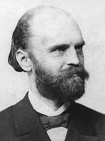

Comunidade e sociedade são termos largamente utilizados para definir agrupamentos de indivíduos. Contudo, ainda que muitas vezes eles possam parecer sinônimos, existem alguns qualificadores que os distinguem e orientam sua utilização dentro dos estudos e pesquisas realizadas no campo da sociologia. Desse modo, é fundamental que tenhamos a compreensão clara das dimensões que cada conceito abarca, bem como das construções teóricas e políticas que estruturam sua aplicação. Portanto, sua maior diferença engloba a sociedade como um grupo maior e mais amplo, já as comunidades são um grupo menor de indivíduos, que apresentam relações mais próximas e partilham interesses e projetos.
O conceito de sociedade é fundamental para o estudo das relações que são estabelecidas entre os indivíduos que partilham valores, cultura, território e história. A sua estruturação contribuiu para o desenvolvimento da sociologia como ciência e contou com a contribuição de diversas intelectuais. Uma sociedade é uma estrutura ampla, na qual os sujeitos estabelecem relações, quase sempre, impessoais, mas que possuem um aspecto de coletividade.
Etimologicamente, a palavra sociedade é originária de dois termos latinos: socius e societa. O primeiro é traduzido como “parceiro” ou “companheiro”; o segundo, por sua vez, significa “associação entre comuns”. Ambas as ideias estão expressas no conceito de sociedade, tanto em sua utilização mais formal e academicista, quanto no uso trivial em que a palavra é empregada.
 Ferdinand Tönnies: sociólogo alemãoA Construção do Conceito de Sociedade
Max Weber (1864 – 1920), que é tido como um dos fundadores da sociologia, foi um dos principais responsáveis pela estruturação do conceito de sociedade. Para ele, a ideia de sociedade estava diretamente ligada às relações que eram estabelecidas entre os sujeitos. Logo, as ações individuais possuíam primazia para a construção do agrupamento social.
Apesar da importância de Weber para o desenvolvimento do conceito de sociedade, é a partir dos trabalhos do sociólogo Ferdinand Tönnies (1855 – 1936) que serão construídos os contornos que o termo possui até os dias atuais. Essa estruturação é apresentada no livro Gemeinschaft und Gesellschaft (Comunidade e Sociedade), publicado no ano de 1887.
Esse livro é considerado um divisor de águas para os estudos de sociologia. Nele, o autor estabelece os parâmetros conceituais para as categorias de comunidade e sociedade. Ao refletir sobre o conceito de sociedade, Tönnies afirma a possibilidade de existência de diversos grupos comunitários em seu interior.
Desse modo, é possível inferir que a extensão do coletivo de indivíduos a que cada conceito se refere é um importante elemento para diferenciá-los. Sendo assim, uma sociedade pode ser entendida como coletivo de comunidades.
A compreensão da amplitude de relações que é abarcada pelo conceito de sociedade é importante para entender outra característica do processo que ele determina: sua dinamicidade. As sociedades são marcadas por uma grande diversidade de sujeitos que partilham características em comum.
Características da Sociedade
A partir das contribuições teóricas dadas pelos pesquisadores do campo sociológico e da assimilação das modificações que aconteceram nas relações sociais, em virtude dos processos de globalização e criação de novas possibilidades de interação através dos meios de comunicação, é possível elencar algumas características das sociedades. São elas:
- A existência de uma complexa teia de relações entre os indivíduos;
- As interações entre os membros de uma sociedade podem se dar de diferentes formas: direta, indireta, organização, desorganizada, consciente ou inconsciente;
- Os interesses que unificam diversas comunidades podem ser localizados na sociedade a que elas fazem parte;
- As sociedades podem ser estabelecidas sem que haja a delimitação de uma área geográfica.
Os tipos de Sociedade
As transformações sociais que aconteceram ao longo da história possibilitam o desenvolvimento de diferentes tipos de sociedade. Somente no período pré-capitalista, a sociologia aponta a existência das sociedades feudal e burguesa. Cada uma é caracterizada por formas específicas de modo de produção, relações e estruturação sociais.
No período do feudalismo, encontramos a atividade agrícola como principal instrumento de movimentação econômica. Os indivíduos estavam divididos em grupos, que possuíam funções específicas e não havia possibilidade de mobilidade social. As terras eram dividas em feudos e concedidas aos nobres pelo rei. Os donos das terras controlavam a produção agrícola através do trabalho dos servos.
A sociedade burguesa surge a partir das transformações que são propostas por movimentos, como o Iluminismo, a Revolução Francesa e a Revolução Industrial. A industrialização e a perda de influência da igreja em questões de estado estão entre as principais características dessa sociedade. Agora, os burgueses são o principal grupo social e político.
Na sociedade burguesa, os camponeses perdem o controle dos meios de produção, que agora se desenvolve a partir de um processo fracionado em que eles são apenas parte da linha de produção. Ao refletir sobre os impactos dessa nova configuração na subjetividade dos trabalhadores, Karl Marx vai apontar a existência de um processo de alienação.
O sociólogo francês Émile Durkheim apresenta uma classificação dos tipos de sociedades, a partir da qual elas podem ser definidas como sociedade de solidariedade mecânica e sociedade de solidariedade orgânica.
As primeiras dizem respeito às organizações sociais existentes no período pré-capitalista, como as anteriormente apresentadas. O segundo tipo de sociedade é comum no contexto pós-capitalista, em que as atividades desenvolvidas por cada indivíduo possuem maior grau de complexidade e especificidade.
Texto de: Educa Mais Brasil · Educa Mais Brasil